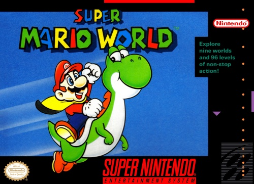

Retro Gamer Cave
SNES (Super Nintendo Entertainment System)
O console icônico da Nintendo
Empresa fabricante:Nintendo
Desenvolvido por:Masayuki Uemura
Ano de lancamento:1990
O SNES foi o console de 16 bits lançado pela Nintendo. O console foi um sucesso imediato, com mais de 20 milhões de unidades vendidas em todo o mundo.Com o clássico controle cinza e os botões roxos, o console foi um dos mais populares entre os fãs da Big N. Vale dizer ainda que ele é a versão ocidental do Super Famicom, vendido no Japão. O videogame ainda teve as versões Júnior e Baby, mais compactas, mas que rodavam os mesmos games.Nessa época o Mega Drive já estava em posição dominante no mercado americano. Então a Nintendo investiu pesado para tentar desbancar o console da SEGA e retomar a liderança que foi sua durante vários anos na época do NES. Eis que em 1992 a Nintendo dá o tiro certeiro e lança Street Fighter II da Capcom. No Japão o SNES ganhava de lavada do Mega Drive, Porém no ocidente,mesmo com o Street Fighter 2 o Mega continuava na frente, principalmente em razão dos jogos de esporte e de jogos com participação de personalidades.O processador do SuperNes, apesar de poderoso, era extremamente lento.Isso fazia com que os seus jogos, na maioria das vezes, não conseguissem passar com muita qualidade a sensação de velocidade, algo que o Mega Drive em jogos como Sonic conseguia fazer com destreza. Apesar dessa falta de velocidade,o console costumava compensar isso com gráficos e sons de melhor qualidade,fator que equilibrava a briga entre os dois consoles.

Talvez o 16 bit da Nintendo não tivesse conseguido fazer tanto sucesso, se não fosse seus ótimos jogos, Tanto as grandes franquias, como Super Mario, Zelda, Metroid e outras, como outros que deram uma grande contribuição ao console, como Donkey Kong Country, Super Mário RPG, Super Mario Kart, Mega Man X, Chrono Trigger, Final Fantasy, Street Fight e muitos outros(tornando bem difícil a missão de listar um top 3)
TOP 3 JOGOS DO SNES
- SUPER MARIO WORLD(1990): Um clássico jogo de plataforma que introduziu o Yoshi e muitas inovações na série Mario. É considerado um dos melhores jogos de todos os tempos. traz o encanador Mario Bros em busca da princesa Peach Toadstool, que foi sequestrada pelo Rei Koopa Bowser. Além disso, ele descobre, graças a Yoshi, que muitos dinossauros foram aprisionados em ovos, e precisam da ajuda dele.O encanador, então, parte para uma aventura muito emocionante, atravessando o perigo em vários níveis, incluindo subterrâneos e subaquáticos, ganhando capa para voar, atirando bolas de fogo ao encontrar a Flor do Fogo, e aumentando de tamanho com o Super Cogumelo.

- CHRONO TRIGGER(1995):Um RPG épico que envolve viagens no tempo, múltiplos finais e personagens memoráveis. Foi criado por uma equipe de mestres do gênero, incluindo Akira Toriyama, o criador de Dragon Ball. Eu particularmente considero esse como o melhor jogo de RPG clássico um dos fatores que mais chamaram a minha atenção foi a construção dos personagens, onde ao decorrer do jogo podemos entender um pouco mais sobre cada um além dos seus objetivos. O jogo também conta com 13 desfechos disponíveis

- STREET FIGHTER 2 - THE WORLD WARRIOR(1991): O jogo é a segunda versão da série Street Fighter, que começou com o jogo de arcade Street Fighter em 1987. O jogo permite que o jogador escolha entre oito personagens diferentes, cada um com seus próprios golpes, habilidades e histórias. O objetivo é derrotar os outros sete lutadores, e depois enfrentar quatro chefes finais: Balrog, Vega, Sagat e M. Bison. O jogo também tem um modo de dois jogadores, onde os jogadores podem se enfrentar ou cooperar contra os inimigos. o titulo foi bastante elogiado por sua jogabilidade rápida, gráficos coloridos, música cativante e variedade de personagens. O jogo também introduziu muitas inovações no gênero de luta, como os ataques especiais, os combos e os contra-ataques.